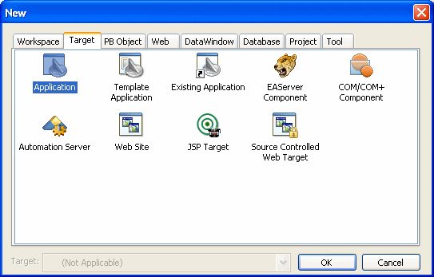
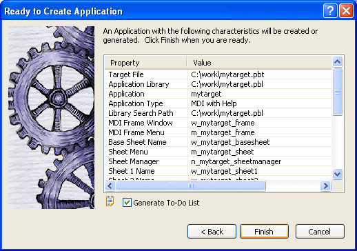

When you create a target, you are prompted for the name and location of a Target (.pbt) file and one or more other objects. Target files are text files that contain information about the target.
 To create a new target:
To create a new target:
The New dialog box opens.

On the Target tab page, select one of the Target wizards.
For more information about each type of Target wizard, see the sections following these instructions.
Follow the instructions in the wizard, providing the information the wizard needs.
In most wizards, you can review your choices on the summary page that displays when you have finished entering information. This is a summary page from the Template Application wizard:

Be sure the Generate To-Do List check box is checked if you want the wizard to add items to the To-Do List to guide and facilitate your development work.
When you are satisfied with your choices in the wizard, click Finish.
The objects are created in the target you specified. If you specified that items were to be added to the To-Do List, you can see the items by clicking the To-Do List button in the PowerBar.
As you develop the application, you can use linked items on the To-Do list to open an object in the specific painter and view where you need to work. See "Using the To-Do List".